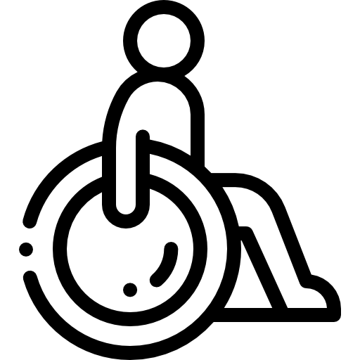

Tools
Adobe XD, Figma
Photoshop, CANoe,
Miro, Framer, Illustrator
Tableau, Draw.io, Notion
Google Analytic, BI

Design
Concept Sketch, Wireframes
Prototyping (low-fi to hi-fi)
Business flows, Design thinking
Data Visualisation, Design Spint

Research
Persona, Userflows
A/B Testing, Storyboard
Business model canvas
User journey, Persona,etc.
My design focus

Inclusion and Accessibility
I believe every user should be given equal access and opportunities to the product. No one should feel left out of the system. It is our job as a designer to design while thinking about accessibility

Data is a partner
If we were a mother/father who gives birth to our design, without data(e.g story, pain points, etc) there is no child (design). I believe we need to find a good partner to support us in every design decision. Good quality & quantitative data is key to create a good product for the users.

Business
Good design not only focuses on the end-user. The business is a big part of the product life cycle. I always design a product with both a design and business perspective because I believe a successful business comes from a successful product.